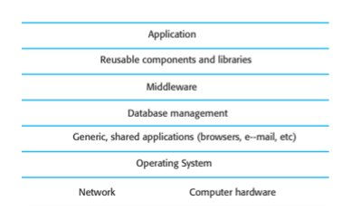
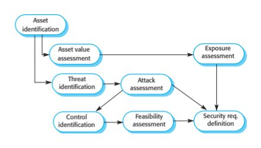
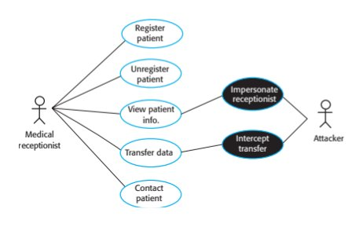
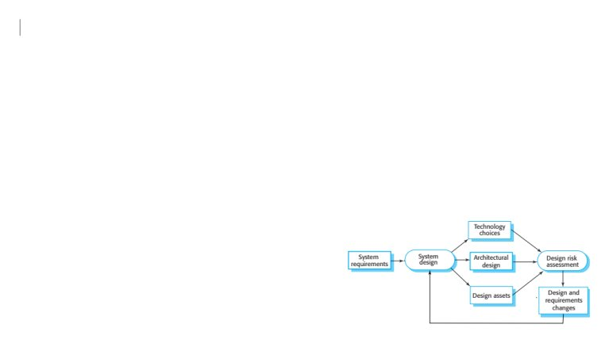
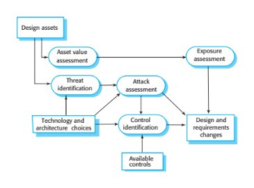
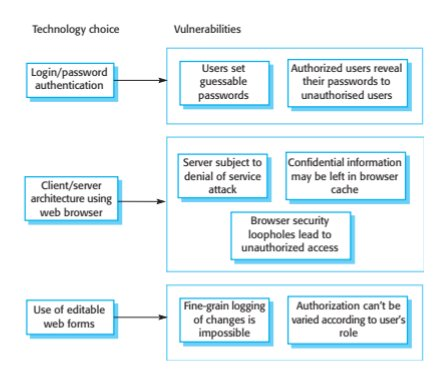
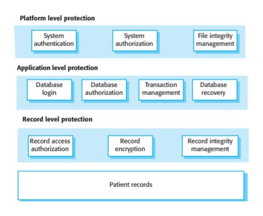
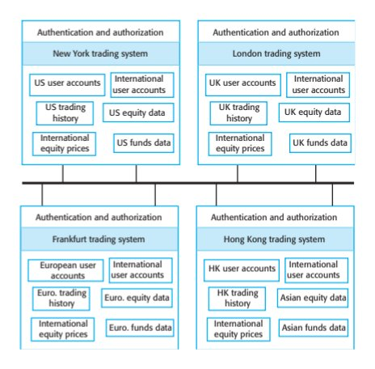

Chapter 13 · Security Engineering
Source review
The original source text, examples, tables and caveats remain available. Source slide numbers and textbook PDF pages are different references. Historical assertions stay attributed to this edition; this page is not a current legal, medical, regulatory or product guide. Classroom activities are labelled separately.
Required selections
- Misuse cases and requirements: original slides 40–43
- Secure design principles: original slides 44–47
Apply one named source concept to the chapter artifact and explain its effect. Finish any uncompleted core topic here; material does not become optional merely because it is reviewed after class. Assignment dates and marks remain in Blackboard.
Original source-slide ledger
Slide 1 · Chapter 13 – Security Engineering
Slide 2 · Topics covered
Topics covered Security and dependability Security and organizations Security requirements Secure systems design Security testing and assurance
Slide 3 · Security engineering
Security engineering Tools, techniques and methods to support the development and maintenance of systems that can resist malicious attacks that are intended to damage a computer-based system or its data. A sub-field of the broader field of computer security.
Slide 4 · Security dimensions
Security dimensions Confidentiality Information in a system may be disclosed or made accessible to people or programs that are not authorized to have access to that information. Integrity Information in a system may be damaged or corrupted making it unusual or unreliable. Availability Access to a system or its data that is normally available may not be possible.
Slide 5 · Security levels
Security levels Infrastructure security, which is concerned with maintaining the security of all systems and networks that provide an infrastructure and a set of shared services to the organization. Application security, which is concerned with the security of individual application systems or related groups of systems. Operational security, which is concerned with the secure operation and use of the organization’s systems.
Slide 6 · System layers where security may be compromised
System layers where security may be compromised
Slide 7 · Application/infrastructure security
Application/infrastructure security Application security is a software engineering problem where the system is designed to resist attacks. Infrastructure security is a systems management problem where the infrastructure is configured to resist attacks. The focus of this chapter is application security rather than infrastructure security.
Slide 8 · System security management
System security management User and permission management Adding and removing users from the system and setting up appropriate permissions for users Software deployment and maintenance Installing application software and middleware and configuring these systems so that vulnerabilities are avoided. Attack monitoring, detection and recovery Monitoring the system for unauthorized access, design strategies for resisting attacks and develop backup and recovery strategies.
Slide 9 · Operational security
Operational security Primarily a human and social issue Concerned with ensuring the people do not take actions that may compromise system security E.g. Tell others passwords, leave computers logged on Users sometimes take insecure actions to make it easier for them to do their jobs There is therefore a trade-off between system security and system effectiveness.
Slide 10 · Security and dependability
Security and dependability
Slide 11 · Security
Security The security of a system is a system property that reflects the system’s ability to protect itself from accidental or deliberate external attack. Security is essential as most systems are networked so that external access to the system through the Internet is possible. Security is an essential pre-requisite for availability, reliability and safety.
Slide 12 · Fundamental security
Fundamental security If a system is a networked system and is insecure then statements about its reliability and its safety are unreliable. These statements depend on the executing system and the developed system being the same. However, intrusion can change the executing system and/or its data. Therefore, the reliability and safety assurance is no longer valid.
Slide 13 · Security terminology
Security terminology
Slide 14 · Examples of security terminology (Mentcare)
Examples of security terminology (Mentcare)
Slide 15 · Threat types
Threat types Interception threats that allow an attacker to gain access to an asset. A possible threat to the Mentcare system might be a situation where an attacker gains access to the records of an individual patient. Interruption threats that allow an attacker to make part of the system unavailable. A possible threat might be a denial of service attack on a system database server so that database connections become impossible.
Slide 16 · Threat types
Threat types Modification threats that allow an attacker to tamper with a system asset. In the Mentcare system, a modification threat would be where an attacker alters or destroys a patient record. Fabrication threats that allow an attacker to insert false information into a system. This is perhaps not a credible threat in the Mentcare system but would be a threat in a banking system, where false transactions might be added to the system that transfer money to the perpetrator’s bank account.
Slide 17 · Security assurance
Security assurance Vulnerability avoidance The system is designed so that vulnerabilities do not occur. For example, if there is no external network connection then external attack is impossible Attack detection and elimination The system is designed so that attacks on vulnerabilities are detected and neutralised before they result in an exposure. For example, virus checkers find and remove viruses before they infect a system Exposure limitation and recovery The system is designed so that the adverse consequences of a successful attack are minimised. For example, a backup policy allows damaged information to be restored
Slide 18 · Security and dependability
Security and dependability Security and reliability If a system is attacked and the system or its data are corrupted as a consequence of that attack, then this may induce system failures that compromise the reliability of the system. Security and availability A common attack on a web-based system is a denial of service attack, where a web server is flooded with service requests from a range of different sources. The aim of this attack is to make the system unavailable.
Slide 19 · Security and dependability
Security and dependability Security and safety An attack that corrupts the system or its data means that assumptions about safety may not hold. Safety checks rely on analysing the source code of safety critical software and assume the executing code is a completely accurate translation of that source code. If this is not the case, safety-related failures may be induced and the safety case made for the software is invalid. Security and resilience Resilience is a system characteristic that reflects its ability to resist and recover from damaging events. The most probable damaging event on networked software systems is a cyberattack of some kind so most of the work now done in resilience is aimed at deterring, detecting and recovering from such attacks.
Slide 20 · Security and organizations
Security and organizations
Slide 21 · Security is a business issue
Security is a business issue Security is expensive and it is important that security decisions are made in a cost-effective way There is no point in spending more than the value of an asset to keep that asset secure. Organizations use a risk-based approach to support security decision making and should have a defined security policy based on security risk analysis Security risk analysis is a business rather than a technical process
Slide 22 · Organizational security policies
Organizational security policies Security policies should set out general information access strategies that should apply across the organization. The point of security policies is to inform everyone in an organization about security so these should not be long and detailed technical documents. From a security engineering perspective, the security policy defines, in broad terms, the security goals of the organization. The security engineering process is concerned with implementing these goals.
Slide 23 · Security policies
Security policies The assets that must be protected It is not cost-effective to apply stringent security procedures to all organizational assets. Many assets are not confidential and can be made freely available. The level of protection that is required for different types of asset For sensitive personal information, a high level of security is required; for other information, the consequences of loss may be minor so a lower level of security is adequate.
Slide 24 · Security policies
Security policies The responsibilities of individual users, managers and the organization The security policy should set out what is expected of users e.g. strong passwords, log out of computers, office security, etc. Existing security procedures and technologies that should be maintained For reasons of practicality and cost, it may be essential to continue to use existing approaches to security even where these have known limitations.
Slide 25 · Security risk assessment and management
Security risk assessment and management Risk assessment and management is concerned with assessing the possible losses that might ensue from attacks on the system and balancing these losses against the costs of security procedures that may reduce these losses. Risk management should be driven by an organisational security policy. Risk management involves Preliminary risk assessment Life cycle risk assessment Operational risk assessment
Slide 26 · Preliminary risk assessment
Preliminary risk assessment The aim of this initial risk assessment is to identify generic risks that are applicable to the system and to decide if an adequate level of security can be achieved at a reasonable cost. The risk assessment should focus on the identification and analysis of high-level risks to the system. The outcomes of the risk assessment process are used to help identify security requirements.
Slide 27 · Design risk assessment
Design risk assessment This risk assessment takes place during the system development life cycle and is informed by the technical system design and implementation decisions. The results of the assessment may lead to changes to the security requirements and the addition of new requirements. Known and potential vulnerabilities are identified, and this knowledge is used to inform decision making about the system functionality and how it is to be implemented, tested, and deployed.
Slide 28 · Operational risk assessment
Operational risk assessment This risk assessment process focuses on the use of the system and the possible risks that can arise from human behavior. Operational risk assessment should continue after a system has been installed to take account of how the system is used. Organizational changes may mean that the system is used in different ways from those originally planned. These changes lead to new security requirements that have to be implemented as the system evolves.
Slide 29 · Security requirements
Security requirements
Slide 30 · Security specification
Security specification Security specification has something in common with safety requirements specification – in both cases, your concern is to avoid something bad happening. Four major differences Safety problems are accidental – the software is not operating in a hostile environment. In security, you must assume that attackers have knowledge of system weaknesses When safety failures occur, you can look for the root cause or weakness that led to the failure. When failure results from a deliberate attack, the attacker may conceal the cause of the failure. Shutting down a system can avoid a safety-related failure. Causing a shut down may be the aim of an attack. Safety-related events are not generated from an intelligent adversary. An attacker can probe defenses over time to discover weaknesses.
Slide 31 · Types of security requirement
Types of security requirement Identification requirements. Authentication requirements. Authorisation requirements. Immunity requirements. Integrity requirements. Intrusion detection requirements. Non-repudiation requirements. Privacy requirements. Security auditing requirements. System maintenance security requirements.
Slide 32 · Security requirement classification
Security requirement classification Risk avoidance requirements set out the risks that should be avoided by designing the system so that these risks simply cannot arise. Risk detection requirements define mechanisms that identify the risk if it arises and neutralise the risk before losses occur. Risk mitigation requirements set out how the system should be designed so that it can recover from and restore system assets after some loss has occurred.
Slide 33 · The preliminary risk assessment process for security requirements
The preliminary risk assessment process for security requirements
Slide 34 · Security risk assessment
Security risk assessment Asset identification Identify the key system assets (or services) that have to be protected. Asset value assessment Estimate the value of the identified assets. Exposure assessment Assess the potential losses associated with each asset. Threat identification Identify the most probable threats to the system assets
Slide 35 · Security risk assessment
Security risk assessment Attack assessment Decompose threats into possible attacks on the system and the ways that these may occur. Control identification Propose the controls that may be put in place to protect an asset. Feasibility assessment Assess the technical feasibility and cost of the controls. Security requirements definition Define system security requirements. These can be infrastructure or application system requirements.
Slide 36 · Asset analysis in a preliminary risk assessment report for the Mentcare system
Asset analysis in a preliminary risk assessment report for the Mentcare system
Slide 37 · Threat and control analysis in a preliminary risk assessment report
Threat and control analysis in a preliminary risk assessment report
Slide 38 · Security requirements for the Mentcare system
Security requirements for the Mentcare system Patient information shall be downloaded at the start of a clinic session to a secure area on the system client that is used by clinical staff. All patient information on the system client shall be encrypted. Patient information shall be uploaded to the database after a clinic session has finished and deleted from the client computer. A log on a separate computer from the database server must be maintained of all changes made to the system database.
Slide 39 · Misuse cases
Misuse cases Misuse cases are instances of threats to a system Interception threats Attacker gains access to an asset Interruption threats Attacker makes part of a system unavailable Modification threats A system asset if tampered with Fabrication threats False information is added to a system
Slide 40 · Misuse cases
Misuse cases
Slide 41 · Mentcare use case – Transfer data
Mentcare use case – Transfer data
Slide 42 · Mentcare misuse case: Intercept transfer
Mentcare misuse case: Intercept transfer
Slide 43 · Misuse case: Intercept transfer
Misuse case: Intercept transfer
Slide 44 · Secure systems design
Secure systems design
Slide 45 · Secure systems design
Secure systems design Security should be designed into a system – it is very difficult to make an insecure system secure after it has been designed or implemented Architectural design how do architectural design decisions affect the security of a system? Good practice what is accepted good practice when designing secure systems?
Slide 46 · Design compromises
Design compromises Adding security features to a system to enhance its security affects other attributes of the system Performance Additional security checks slow down a system so its response time or throughput may be affected Usability Security measures may require users to remember information or require additional interactions to complete a transaction. This makes the system less usable and can frustrate system users.
Slide 47 · Design risk assessment
Design risk assessment Risk assessment while the system is being developed and after it has been deployed More information is available - system platform, middleware and the system architecture and data organisation. Vulnerabilities that arise from design choices may therefore be identified.
Slide 48 · Design and risk assessment
Design and risk assessment
Slide 49 · Protection requirements
Protection requirements Protection requirements may be generated when knowledge of information representation and system distribution Separating patient and treatment information limits the amount of information (personal patient data) that needs to be protected Maintaining copies of records on a local client protects against denial of service attacks on the server But these may need to be encrypted
Slide 50 · Design risk assessment
Design risk assessment
Slide 51 · Design decisions from use of COTS
Design decisions from use of COTS System users authenticated using a name/password combination. The system architecture is client-server with clients accessing the system through a standard web browser. Information is presented as an editable web form.
Slide 52 · Vulnerabilities associated with technology choices
Vulnerabilities associated with technology choices
Slide 53 · Security requirements
Security requirements A password checker shall be made available and shall be run daily. Weak passwords shall be reported to system administrators. Access to the system shall only be allowed by approved client computers. All client computers shall have a single, approved web browser installed by system administrators.
Slide 54 · Architectural design
Architectural design Two fundamental issues have to be considered when designing an architecture for security. Protection How should the system be organised so that critical assets can be protected against external attack? Distribution How should system assets be distributed so that the effects of a successful attack are minimized? These are potentially conflicting If assets are distributed, then they are more expensive to protect. If assets are protected, then usability and performance requirements may be compromised.
Slide 55 · Protection
Protection Platform-level protection Top-level controls on the platform on which a system runs. Application-level protection Specific protection mechanisms built into the application itself e.g. additional password protection. Record-level protection Protection that is invoked when access to specific information is requested These lead to a layered protection architecture
Slide 56 · A layered protection architecture
A layered protection architecture
Slide 57 · Distribution
Distribution Distributing assets means that attacks on one system do not necessarily lead to complete loss of system service Each platform has separate protection features and may be different from other platforms so that they do not share a common vulnerability Distribution is particularly important if the risk of denial of service attacks is high
Slide 58 · Distributed assets in an equity trading system
Distributed assets in an equity trading system
Slide 59 · Design guidelines for security engineering
Design guidelines for security engineering Design guidelines encapsulate good practice in secure systems design Design guidelines serve two purposes: They raise awareness of security issues in a software engineering team. Security is considered when design decisions are made. They can be used as the basis of a review checklist that is applied during the system validation process. Design guidelines here are applicable during software specification and design
Slide 60 · Design guidelines for secure systems engineering
Design guidelines for secure systems engineering
Slide 61 · Design guidelines 1-3
Design guidelines 1-3 Base decisions on an explicit security policy Define a security policy for the organization that sets out the fundamental security requirements that should apply to all organizational systems. Avoid a single point of failure Ensure that a security failure can only result when there is more than one failure in security procedures. For example, have password and question-based authentication. Fail securely When systems fail, for whatever reason, ensure that sensitive information cannot be accessed by unauthorized users even although normal security procedures are unavailable.
Slide 62 · Design guidelines 4-6
Design guidelines 4-6 Balance security and usability Try to avoid security procedures that make the system difficult to use. Sometimes you have to accept weaker security to make the system more usable. Log user actions Maintain a log of user actions that can be analyzed to discover who did what. If users know about such a log, they are less likely to behave in an irresponsible way. Use redundancy and diversity to reduce risk Keep multiple copies of data and use diverse infrastructure so that an infrastructure vulnerability cannot be the single point of failure.
Slide 63 · Design guidelines 7-10
Design guidelines 7-10 Specify the format of all system inputs If input formats are known then you can check that all inputs are within range so that unexpected inputs don’t cause problems. Compartmentalize your assets Organize the system so that assets are in separate areas and users only have access to the information that they need rather than all system information. Design for deployment Design the system to avoid deployment problems Design for recoverability Design the system to simplify recoverability after a successful attack.
Slide 64 · Secure systems programming
Secure systems programming
Slide 65 · Aspects of secure systems programming
Aspects of secure systems programming Vulnerabilities are often language-specific. Array bound checking is automatic in languages like Java so this is not a vulnerability that can be exploited in Java programs. However, millions of programs are written in C and C++ as these allow for the development of more efficient software so simply avoiding the use of these languages is not a realistic option. Security vulnerabilities are closely related to program reliability. Programs without array bound checking can crash so actions taken to improve program reliability can also improve system security.
Slide 66 · Dependable programming guidelines
Dependable programming guidelines
Slide 67 · Security testing and assurance
Security testing and assurance
Slide 68 · Security testing
Security testing Testing the extent to which the system can protect itself from external attacks. Problems with security testing Security requirements are ‘shall not’ requirements i.e. they specify what should not happen. It is not usually possible to define security requirements as simple constraints that can be checked by the system. The people attacking a system are intelligent and look for vulnerabilities. They can experiment to discover weaknesses and loopholes in the system.
Slide 69 · Security validation
Security validation Experience-based testing The system is reviewed and analysed against the types of attack that are known to the validation team. Penetration testing A team is established whose goal is to breach the security of the system by simulating attacks on the system. Tool-based analysis Various security tools such as password checkers are used to analyse the system in operation. Formal verification The system is verified against a formal security specification.
Slide 70 · Examples of entries in a security checklist
Examples of entries in a security checklist Security checklist 1. Do all files that are created in the application have appropriate access permissions? The wrong access permissions may lead to these files being accessed by unauthorized users. 2. Does the system automatically terminate user sessions after a period of inactivity? Sessions that are left active may allow unauthorized access through an unattended computer. 3. If the system is written in a programming language without array bound checking, are there situations where buffer overflow may be exploited? Buffer overflow may allow attackers to send code strings to the system and then execute them. 4. If passwords are set, does the system check that passwords are ‘strong’? Strong passwords consist of mixed letters, numbers, and punctuation, and are not normal dictionary entries. They are more difficult to break than simple passwords. 5. Are inputs from the system’s environment always checked against an input specification? Incorrect processing of badly formed inputs is a common cause of security vulnerabilities.
Slide 71 · Key points
Key points Security engineering is concerned with how to develop systems that can resist malicious attacks Security threats can be threats to confidentiality, integrity or availability of a system or its data Security risk management is concerned with assessing possible losses from attacks and deriving security requirements to minimise losses To specify security requirements, you should identify the assets that are to be protected and define how security techniques and technology should be used to protect these assets.
Slide 72 · Key points
Key points Key issues when designing a secure systems architecture include organizing the system structure to protect key assets and distributing the system assets to minimize the losses from a successful attack. Security design guidelines sensitize system designers to security issues that they may not have considered. They provide a basis for creating security review checklists. Security validation is difficult because security requirements state what should not happen in a system, rather than what should. Furthermore, system attackers are intelligent and may have more time to probe for weaknesses than is available for security testing.
Preserved original source illustrations
Select a figure to inspect it at its original size. The original PDF/PPTX retains its full layout and vector diagrams.








Supplied textbook chapter · complete text
The PDF remains authoritative for mathematical layout, figures and tables. Line wrapping and extraction artifacts may occur below; no textbook statement is replaced by a contemporary claim.
PDF page 1 · printed page 373
13
Security engineering
Objectives
The objective of this chapter is to introduce security issues that you
should consider when you are developing application systems. When you
have read this chapter, you will:
■ understand the importance of security engineering and the difference
between application security and infrastructure security;
■ know how a risk-based approach can be used to derive security
requirements and analyze system designs;
■ know of software architectural patterns and design guidelines for
secure systems engineering;
■ understand why security testing and assurance is difficult and
expensive.
Contents
13.1 Security and dependability
13.2 Security and organizations
13.3 Security requirements
13.4 Secure systems design
13.5 Security testing and assurancePDF page 2 · printed page 374
374 Chapter 13 ■ Security engineering
The widespread adoption of the Internet in the 1990s introduced a new challenge for
software engineers—designing and implementing systems that were secure. As more
and more systems were connected to the Internet, a variety of different external attacks
were devised to threaten these systems. The problems of producing dependable systems
were hugely increased. Systems engineers had to consider threats from malicious and
technically skilled attackers as well as problems resulting from accidental mistakes in
the development process.
It is now essential to design systems to withstand external attacks and to recover
from such attacks. Without security precautions, attackers will inevitably compromise
a networked system. They may misuse the system hardware, steal confidential data,
or disrupt the services offered by the system.
You have to take three security dimensions into account in secure systems engineering:
1. Confidentiality Information in a system may be disclosed or made accessible to
people or programs that are not authorized to have access to that information.
For example, the theft of credit card data from an e-commerce system is a
confidentiality problem.
2. Integrity Information in a system may be damaged or corrupted, making it
unusual or unreliable. For example, a worm that deletes data in a system is an
integrity problem.
3. Availability Access to a system or its data that is normally available may not be
possible. A denial-of-service attack that overloads a server is an example of a
situation where the system availability is compromised.
These dimensions are closely related. If an attack makes the system unavailable,
then you will not be able to update information that changes with time. This means
that the integrity of the system may be compromised. If an attack succeeds and the
integrity of the system is compromised, then it may have to be taken down to repair
the problem. Therefore, the availability of the system is reduced.
From an organizational perspective, security has to be considered at three levels:
1. Infrastructure security, which is concerned with maintaining the security of all
systems and networks that provide an infrastructure and a set of shared services
to the organization.
2. Application security, which is concerned with the security of individual
application systems or related groups of systems.
3. Operational security, which is concerned with the secure operation and use of
the organization’s systems.
Figure 13.1 is a diagram of an application system stack that shows how an
application system relies on an infrastructure of other systems in its operation. The
lower levels of the infrastructure are hardware, but the software infrastructure for
application systems may include:PDF page 3 · printed page 375
Chapter 13 ■ Security engineering 375
Application
Reusable components and libraries
Middleware
Database management
Generic, shared applications (browsers, email, etc.)
Operating System
Figure 13.1 System
layers where security Network Computer hardware
may be compromised
■ an operating system platform, such as Linux or Windows;
■ other generic applications that run on that system, such as web browsers and
email clients;
■ a database management system;
■ middleware that supports distributed computing and database access; and
■ libraries of reusable components that are used by the application software.
Network systems are software controlled, and networks may be subject to security
threats where an attacker intercepts and reads or changes network packets. However,
this requires specialized equipment, so the majority of security attacks are on the
software infrastructure of systems. Attackers focus on software infrastructures
because infrastructure components, such as web browsers, are universally available.
Attackers can probe these systems for weaknesses and share information about
vulnerabilities that they have discovered. As many people use the same software,
attacks have wide applicability.
Infrastructure security is primarily a system management problem, where system
managers configure the infrastructure to resist attacks. System security management
includes a range of activities such as user and permission management, system
software deployment and maintenance, and attack monitoring, detection, and recovery:
1. User and permission management involves adding and removing users from the
system, ensuring that appropriate user authentication mechanisms are in place,
and setting up the permissions in the system so that users only have access to the
resources they need.
2. System software deployment and maintenance involves installing system software
and middleware and configuring these properly so that security vulnerabilities are
avoided. It also involves updating this software regularly with new versions or
patches, which repair security problems that have been discovered.PDF page 4 · printed page 376
376 Chapter 13 ■ Security engineering
3. Attack monitoring, detection, and recovery involves monitoring the system for
unauthorized access, detecting and putting in place strategies for resisting
attacks, and organizing backups of programs and data so that normal operation
can be resumed after an external attack.
Operational security is primarily a human and social issue. It focuses on ensuring
that the people using the system do not behave in such a way that system security is
compromised. For example, users may leave themselves logged on to a system while
it is unattended. An attacker can then easily get access to the system. Users often
behave in an insecure way to help them do their jobs more effectively, and they have
good reason to behave in an insecure way. A challenge for operational security is to
raise awareness of security issues and to find the right balance between security and
system effectiveness.
The term cybersecurity is now commonly used in discussions of system security.
Cybersecurity is a very wide-ranging term that covers all aspects of the protection of
citizens, businesses, and critical infrastructures from threats that arise from their use
of computers and the Internet. Its scope includes all system levels from hardware
and networks through application systems to mobile devices that may be used to
access these systems. I discuss general cybersecurity issues, including infrastructure
security, in Chapter 14, which covers resilience engineering.
In this chapter, I focus on issues of application security engineering—security
requirements, design for security, and security testing. I don’t cover general security
techniques that may be used, such as encryption, and access control mechanisms or
attack vectors, such as viruses and worms. General textbooks on computer security
(Pfleeger and Pfleeger 2007; Anderson 2008; Stallings and Brown 2012) discuss
these techniques in detail.
13.1 Security and dependability
Security is a system attribute that reflects the ability of the system to protect itself
from malicious internal or external attacks. These external attacks are possible
because most computers and mobile devices are networked and are therefore
accessible by outsiders. Examples of attacks might be the installation of viruses and
Trojan horses, unauthorized use of system services, or unauthorized modification of
a system or its data.
If you really want a system to be as secure as possible, it is best not to connect it
to the Internet. Then, your security problems are limited to ensuring that authorized
users do not abuse the system and to controlling the use of devices such as USB
drives. In practice, however, networked access provides huge benefits for most
systems, so disconnecting from the Internet is not a viable security option.
For some systems, security is the most important system dependability attribute.
Military systems, systems for electronic commerce, and systems that involve the
processing and interchange of confidential information must be designed so thatPDF page 5 · printed page 377
13.1 ■ Security and dependability 377
Term Definition
Asset Something of value that has to be protected. The asset may be the software system
itself or the data used by that system.
Attack An exploitation of a system’s vulnerability where an attacker has the goal of causing
some damage to a system asset or assets. Attacks may be from outside the system
(external attacks) or from authorized insiders (insider attacks).
Control A protective measure that reduces a system’s vulnerability. Encryption is an example of
a control that reduces a vulnerability of a weak access control system.
Exposure Possible loss or harm to a computing system. This can be loss or damage to data or
can be a loss of time and effort if recovery is necessary after a security breach.
Threat Circumstances that have potential to cause loss or harm. You can think of a threat as a
system vulnerability that is subjected to an attack.
Vulnerability A weakness in a computer-based system that may be exploited to cause loss or harm.
Figure 13.2 Security
terminology
Unauthorized access to the Mentcare system
Clinic staff log on to the Mentcare system using a username and password. The system requires passwords to
be at least eight letters long but allows any password to be set without further checking. A criminal finds out
that a well-paid sports star is receiving treatment for mental health problems. He would like to gain illegal
access to information in this system so that he can blackmail the star.
By posing as a concerned relative and talking with the nurses in the mental health clinic, he discovers how
to access the system and personal information about the nurses and their families. By checking name badges,
he discovers the names of some of the people allowed access. He then attempts to log on to the system by
using these names and systematically guessing possible passwords, such as the names of the nurses’ children.
Figure 13.3 A security
story for the Mentcare
system they achieve a high level of security. If an airline reservation system is unavailable,
for example, this causes inconvenience and some delays in issuing tickets. However,
if the system is insecure, then an attacker could delete all bookings and it would be
practically impossible for normal airline operations to continue.
As with other aspects of dependability, a specialized terminology is associated
with security (Pfleeger and Pfleeger 2007). This terminology is explained in Figure
13.2. Figure 13.3 is a security story from the Mentcare system that I use to illustrate
some of these terms. Figure 13.4 takes the security concepts defined in Figure 13.2
and shows how they apply to this security story.
System vulnerabilities may arise because of requirements, design, or implementation
problems, or they may stem from human, social, or organizational failings. People may
choose easy-to-guess passwords or write down their passwords in places where they
can be found. System administrators make errors in setting up access control or con-
figuration files, and users don’t install or use protection software. However, we cannot
simply class these problems as human errors. User mistakes or omissions often reflect
poor systems design decisions that require, for example, frequent password changes
(so that users write down their passwords) or complex configuration mechanisms.PDF page 6 · printed page 378
378 Chapter 13 ■ Security engineering
Term Example
Asset The record of each patient who is receiving or has received treatment.
Attack An impersonation of an authorized user.
Control A password checking system that disallows user passwords that are proper names
or words that are normally included in a dictionary.
Exposure Potential financial loss from future patients who do not seek treatment because
they do not trust the clinic to maintain their data. Financial loss from legal action
by the sports star. Loss of reputation.
Threat An unauthorized user will gain access to the system by guessing the credentials
(login name and password) of an authorized user.
Vulnerability Authentication is based on a password system that does not require strong
passwords. Users can then set easily guessable passwords.
Figure 13.4 Examples
Four types of security threats may arise:of security terminology
1. Interception threats that allow an attacker to gain access to an asset. So, a
possible threat to the Mentcare system might be a situation where an attacker
gains access to the records of an individual patient.
2. Interruption threats that allow an attacker to make part of the system unavailable.
Therefore, a possible threat might be a denial-of-service attack on a system
database server.
3. Modification threats that allow an attacker to tamper with a system asset. In the
Mentcare system, a modification threat would be where an attacker alters or
destroys a patient record.
4. Fabrication threats that allow an attacker to insert false information into a sys-
tem. This is perhaps not a credible threat in the Mentcare system but would
certainly be a threat in a banking system, where false transactions might be
added to the system that transfers money to the perpetrator’s bank account.
The controls that you might put in place to enhance system security are based on
the fundamental notions of avoidance, detection, and recovery:
1. Vulnerability avoidance Controls that are intended to ensure that attacks are
unsuccessful. The strategy here is to design the system so that security problems
are avoided. For example, sensitive military systems are not connected to the
Internet so that external access is more difficult. You should also think of
encryption as a control based on avoidance. Any unauthorized access to
encrypted data means that the attacker cannot read the encrypted data. It is
expensive and time consuming to crack strong encryption.
2. Attack detection and neutralization Controls that are intended to detect and
repel attacks. These controls involve including functionality in a system that
monitors its operation and checks for unusual patterns of activity. If thesePDF page 7 · printed page 379
13.1 ■ Security and dependability 379
attacks are detected, then action may be taken, such as shutting down parts of
the system or restricting access to certain users.
3. Exposure limitation and recovery Controls that support recovery from prob-
lems. These can range from automated backup strategies and information “mir-
roring” through to insurance policies that cover the costs associated with a
successful attack on the system.
Security is closely related to the other dependability attributes of reliability, avail-
ability, safety, and resilience:
1. Security and reliability If a system is attacked and the system or its data are cor-
rupted as a consequence of that attack, then this may induce system failures that
compromise the reliability of the system.
Errors in the development of a system can lead to security loopholes. If a system
does not reject unexpected inputs or if array bounds are not checked, then attackers can
exploit these weaknesses to gain access to the system. For example, failure to check the
validity of an input may mean that an attacker can inject and execute malicious code.
2. Security and availability A common attack on a web-based system is a denial-
of-service attack, where a web server is flooded with service requests from a
range of different sources. The aim of this attack is to make the system unavail-
able. A variant of this attack is where a profitable site is threatened with this
type of attack unless a ransom is paid to the attackers.
3. Security and safety Again, the key problem is an attack that corrupts the system
or its data. Safety checks are based on the assumption that we can analyze the
source code of safety-critical software and that the executing code is a com-
pletely accurate translation of that source code. If this is not the case, because an
attacker has changed the executing code, safety-related failures may be induced
and the safety case made for the software is invalid.
Like safety, we cannot assign a numeric value to the security of a system, nor
can we exhaustively test the system for security. Both safety and security can be
thought of as “negative” or “shall not” characteristics in that they are concerned
with things that should not happen. As we can never prove a negative, we can
never prove that a system is safe or secure.
4. Security and resilience Resilience, covered in Chapter 14, is a system character-
istic that reflects its ability to resist and recover from damaging events. The
most probable damaging event on networked software systems is a cyberattack
of some kind, so most of the work now done in resilience is aimed at deterring,
detecting, and recovering from such attacks.
Security has to be maintained if we are to create reliable, available, and safe software-
intensive systems. It is not an add-on, which can be added later but has to be considered
at all stages of the development life cycle from early requirements to system operation.PDF page 8 · printed page 380
380 Chapter 13 ■ Security engineering
13.2 Security and organizations
Building secure systems is expensive and uncertain. It is impossible to predict the
costs of a security failure, so companies and other organizations find it difficult to
judge how much they should spend on system security. In this respect, security and
safety are different. There are laws that govern workplace and operator safety, and
developers of safety-critical systems have to comply with these irrespective of the
costs. They may be subject to legal action if they use an unsafe system. However,
unless a security failure discloses personal information, there are no laws that pre-
vent an insecure system from being deployed.
Companies assess the risks and losses that may arise from certain types of attacks
on system assets. They may then decide that it is cheaper to accept these risks rather
than build a secure system that can deter or repel the external attacks. Credit card
companies apply this approach to fraud prevention. It is usually possible to introduce
new technology to reduce credit card fraud. However, it is often cheaper for these
companies to compensate users for their losses due to fraud than to buy and deploy
fraud-reduction technology.
Security risk management is therefore a business rather than a technical issue. It
has to take into account the financial and reputational losses from a successful sys-
tem attack as well as the costs of security procedures and technologies that may
reduce these losses. For risk management to be effective, organizations should have
a documented information security policy that sets out:
1. The assets that must be protected It does not necessarily make sense to apply
stringent security procedures to all organizational assets. Many assets are not con-
fidential, and a company can improve its image by making these assets freely
available. The costs of maintaining the security of information that is in the public
domain are much less than the costs of keeping confidential information secure.
2. The level of protection that is required for different types of assets Not all assets
need the same level of protection. In some cases (e.g., for sensitive personal
information), a high level of security is required; for other information, the con-
sequences of loss may be minor, so a lower level of security is adequate.
Therefore, some information may be made available to any authorized and
logged-in user; other information may be much more sensitive and only availa-
ble to users in certain roles or positions of responsibility.
3. The responsibilities of individual users, managers, and the organization The
security policy should set out what is expected of users—for example, use
strong passwords, log out of computers, and lock offices. It also defines what
users can expect from the company, such as backup and information-archiving
services, and equipment provision.
4. Existing security procedures and technologies that should be maintained For
reasons of practicality and cost, it may be essential to continue to use existing
approaches to security even where these have known limitations. For example,PDF page 9 · printed page 381
13.2 ■ Security and organizations 381
a company may require the use of a login name/password for authentication,
simply because other approaches are likely to be rejected by users.
Security policies often set out general information access strategies that should
apply across the organization. For example, an access strategy may be based on the
clearance or seniority of the person accessing the information. Therefore, a military
security policy may state: “Readers may only examine documents whose classifica-
tion is the same as or below the reader’s vetting level.” This means that if a reader
has been vetted to a “secret” level, he or she may access documents that are classed
as secret, confidential, or open but not documents classed as top secret.
The point of security policies is to inform everyone in an organization about secu-
rity, so these should not be long and detailed technical documents. From a security
engineering perspective, the security policy defines, in broad terms, the security
goals of the organization. The security engineering process is concerned with imple-
menting these goals.
13.2.1 Security risk assessment
Security risk assessment and management are organizational activities that focus on iden-
tifying and understanding the risks to information assets (systems and data) in the organi-
zation. In principle, an individual risk assessment should be carried out for all assets; in
practice, however, this may be impractical if a large number of existing systems and
databases need to be assessed. In those situations, a generic assessment may be applied to
all of them. However, individual risk assessments should be carried out for new systems.
Risk assessment and management is an organizational activity rather than a tech-
nical activity that is part of the software development life cycle. The reason for this
is that some types of attack are not technology-based but rather rely on weaknesses
in more general organizational security. For example, an attacker may gain access to
equipment by pretending to be an accredited engineer. If an organization has a pro-
cess to check with the equipment supplier that an engineer’s visit is planned, this can
deter this type of attack. This approach is much simpler than trying to address the
problem using a technological solution.
When a new system is to be developed, security risk assessment and management
should be a continuing process throughout the development life cycle from initial
specification to operational use. The stages of risk assessment are:
1. Preliminary risk assessment The aim of this initial risk assessment is to identify
generic risks that are applicable to the system and to decide if an adequate level
of security can be achieved at a reasonable cost. At this stage, decisions on the
detailed system requirements, the system design, or the implementation technol-
ogy have not been made. You don’t know of potential technology vulnerabilities
or the controls that are included in reused system components or middleware.
The risk assessment should therefore focus on the identification and analysis of
high-level risks to the system. The outcomes of the risk assessment process are
used to help identify security requirements.PDF page 10 · printed page 382
382 Chapter 13 ■ Security engineering
2. Design risk assessment This risk assessment takes place during the system devel-
opment life cycle and is informed by the technical system design and implementa-
tion decisions. The results of the assessment may lead to changes to the security
requirements and the addition of new requirements. Known and potential vulnera-
bilities are identified, and this knowledge is used to inform decision making about
the system functionality and how it is to be implemented, tested, and deployed.
3. Operational risk assessment This risk assessment process focuses on the use of
the system and the possible risks that can arise. For example, when a system is
used in an environment where interruptions are common, a security risk is that a
logged-in user leaves his or her computer unattended to deal with a problem. To
counter this risk, a timeout requirement may be specified so that a user is auto-
matically logged out after a period of inactivity.
Operational risk assessment should continue after a system has been installed to
take account of how the system is used and proposals for new and changed require-
ments. Assumptions about the operating requirement made when the system was
specified may be incorrect. Organizational changes may mean that the system is
used in different ways from those originally planned. These changes lead to new
security requirements that have to be implemented as the system evolves.
13.3 Security requirements
The specification of security requirements for systems has much in common with
the specification of safety requirements. You cannot specify safety or security
requirements as probabilities. Like safety requirements, security requirements are
often “shall not” requirements that define unacceptable system behavior rather than
required system functionality.
However, security is a more challenging problem than safety, for a number of
reasons:
1. When considering safety, you can assume that the environment in which the
system is installed is not hostile. No one is trying to cause a safety-related inci-
dent. When considering security, you have to assume that attacks on the system
are deliberate and that the attacker may have knowledge of system weaknesses.
2. When system failures occur that pose a risk to safety, you look for the errors or
omissions that have caused the failure. When deliberate attacks cause system
failure, finding the root cause may be more difficult as the attacker may try to
conceal the cause of the failure.
3. It is usually acceptable to shut down a system or to degrade system services to
avoid a safety-related failure. However, attacks on a system may be denial-of-
service attacks, which are intended to compromise system availability. Shutting
down the system means that the attack has been successful.PDF page 11 · printed page 383
13.3 ■ Security requirements 383
4. Safety-related events are accidental and are not created by an intelligent adver-
sary. An attacker can probe a system’s defenses in a series of attacks, modifying
the attacks as he or she learns more about the system and its responses.
These distinctions mean that security requirements have to be more extensive
than safety requirements. Safety requirements lead to the generation of functional
system requirements that provide protection against events and faults that could
cause safety-related failures. These requirements are mostly concerned with check-
ing for problems and taking actions if these problems occur. By contrast, many types
of security requirements cover the different threats faced by a system.
Firesmith (Firesmith 2003) identified 10 types of security requirements that may
be included in a system specification:
1. Identification requirements specify whether or not a system should identify its
users before interacting with them.
2. Authentication requirements specify how users are identified.
3. Authorization requirements specify the privileges and access permissions of
identified users.
4. Immunity requirements specify how a system should protect itself against
viruses, worms, and similar threats.
5. Integrity requirements specify how data corruption can be avoided.
6. Intrusion detection requirements specify what mechanisms should be used to
detect attacks on the system.
7. Nonrepudiation requirements specify that a party in a transaction cannot deny
its involvement in that transaction.
8. Privacy requirements specify how data privacy is to be maintained.
9. Security auditing requirements specify how system use can be audited and
checked.
10. System maintenance security requirements specify how an application can pre-
vent authorized changes from accidentally defeating its security mechanisms.
Of course, you will not see all of these types of security requirements in every
system. The particular requirements depend on the type of system, the situation of
use, and the expected users.
Preliminary risk assessment and analysis aim to identify the generic security risks
for a system and its associated data. This risk assessment is an important input to the
security requirements engineering process. Security requirements can be proposed to
support the general risk management strategies of avoidance, detection and mitigation.
1. Risk avoidance requirements set out the risks that should be avoided by design-
ing the system so that these risks simply cannot arise.PDF page 12 · printed page 384
384 Chapter 13 ■ Security engineering
Asset
identification
Asset value Exposure
assessment assessment
Threat Attack
identification assessment
Figure 13.5 The
preliminary risk
assessment process for Control Feasibility Security req.
security requirements identification assessment definition
2. Risk detection requirements define mechanisms that identify the risk if it arises
and neutralize the risk before losses occur.
3. Risk mitigation requirements set out how the system should be designed so that
it can recover from and restore system assets after some loss has occurred.
A risk-driven security requirements process is shown in Figure 13.5. The process
stages are:
1. Asset identification, where the system assets that may require protection are
identified. The system itself or particular system functions may be identified as
assets as well as the data associated with the system.
2. Asset value assessment, where you estimate the value of the identified assets.
3. Exposure assessment, where you assess the potential losses associated with
each asset. This process should take into account direct losses such as the theft
of information, the costs of recovery, and the possible loss of reputation.
4. Threat identification, where you identify the threats to system assets.
5. Attack assessment, where you decompose each threat into attacks that might be
made on the system and the possible ways in which these attacks may occur.
You may use attack trees (Schneier 1999) to analyze the possible attacks. These
are similar to fault trees, (Chapter 12) as you start with a threat at the root of the
tree and then identify possible causal attacks and how these might be made.
6. Control identification, where you propose the controls that might be put in place
to protect an asset. The controls are the technical mechanisms, such as encryp-
tion, that you can use to protect assets.
7. Feasibility assessment, where you assess the technical feasibility and the costs
of the proposed controls. It is not worth having expensive controls to protect
assets that don’t have a high value.PDF page 13 · printed page 385
13.3 ■ Security requirements 385
Asset Value Exposure
The information High. Required to support High. Financial loss as clinics may have to
system all clinical consultations. be canceled. Costs of restoring system.
Potentially safety critical. Possible patient harm if treatment cannot
be prescribed.
The patient database High. Required to support High. Financial loss as clinics may have to
all clinical consultations. be canceled. Costs of restoring system.
Potentially safety critical. Possible patient harm if treatment cannot
be prescribed.
An individual patient Normally low, although Low direct losses but possible loss of
record may be high for specific reputation.
high-profile patients
Figure 13.6 Asset
analysis in a 8. Security requirements definition, where knowledge of the exposure, threats, and
preliminary risk control assessments is used to derive system security requirements. These
assessment report for requirements may apply to the system infrastructure or the application system.
the Mentcare system
The Mentcare patient management system is a security-critical system. Figures
13.6 and 13.7 are fragments of a report that documents the risk analysis of that soft-
ware system. Figure 13.6 is an asset analysis that describes the assets in the system
and their value. Figure 13.7 shows some of the threats that a system may face.
Once a preliminary risk assessment has been completed, then requirements can be
proposed that aim to avoid, detect, and mitigate risks to the system. However, creating
these requirements is not a formulaic or automated process. It requires inputs from
both engineers and domain experts to suggest requirements based on their understand-
ing of the risk analysis and the functional requirements of the software system. Some
examples of the Mentcare system security requirements and associated risks are:
1. Patient information shall be downloaded, at the start of a clinic session, from
the database to a secure area on the system client.
Risk: Damage from denial-of-service attack. Maintaining local copies means
that access is still possible.
2. All patient information on the system client shall be encrypted.
Risk: External access to patient records. If data is encrypted, then attacker must
have access to the encryption key to discover patient information.
3. Patient information shall be uploaded to the database when a clinic session is
over and deleted from the client computer.
Risk: External access to patience records through stolen laptop.
4. A log of all changes made to the system database and the initiator of these
changes shall be maintained on a separate computer from the database server.
Risk: Insider or external attacks that corrupt current data. A log should allow
up-to-date records to be re-created from a backup.PDF page 14 · printed page 386
386 Chapter 13 ■ Security engineering
Threat Probability Control Feasibility
An unauthorized user Low Only allow system Low cost of implementation, but care
gains access as system management from must be taken with key distribution
manager and makes specific locations that and to ensure that keys are available
system unavailable are physically secure. in the event of an emergency.
An unauthorized user High Require all users to Technically feasible but high- cost
gains access as system authenticate solution. Possible user resistance.
user to confidential themselves using a
information biometric mechanism.
Log all changes to Simple and transparent to
patient information to implement and also supports
track system usage. recovery.
Figure 13.7 Threat
and control analysis
in a preliminary risk
assessment report The first two requirements are related—patient information is downloaded to a
local machine, so that consultations may continue if the patient database server is
attacked or becomes unavailable. However, this information must be deleted so
that later users of the client computer cannot access the information. The fourth
requirement is a recovery and auditing requirement. It means that changes can be
recovered by replaying the change log and that it is possible to discover who has
made the changes. This accountability discourages misuse of the system by
authorized staff.
13.3.1 Misuse cases
The derivation of security requirements from a risk analysis is a creative process
involving engineers and domain experts. One approach that has been developed to
support this process for users of the UML is the idea of misuse cases (Sindre and
Opdahl 2005). Misuse cases are scenarios that represent malicious interactions with
a system. You can use these scenarios to discuss and identify possible threats and,
therefore also determine the system’s security requirements. They can be used
alongside use cases when deriving the system requirements (Chapters 4 and 5).
Misuse cases are associated with use case instances and represent threats or
attacks associated with these use cases. They may be included in a use case diagram
but should also have a more complete and detailed textual description. In Figure
13.8, I have taken the use cases for a medical receptionist using the Mentcare system
and have added misuse cases. These are normally represented as black ellipses.
As with use cases, misuse cases can be described in several ways. I think that it is
most helpful to describe them as a supplement to the original use case description. I
also think it is best to have a flexible format for misuse cases as different types of attack
have to be described in different ways. Figure 13.9 shows the original description of
the Transfer Data use case (Figure 5.4), with the addition of a misuse case description.
The problem with misuse cases mirrors the general problem of use cases, which
is that interactions between end-users and a system do not capture all of the systemPDF page 15 · printed page 387
13.3 ■ Security requirements 387
Register
patient
Unregister
patient
Impersonate
receptionist
View patient
info.
Medical Intercept Attacker
receptionist transfer Transfer data
Contact
Figure 13.8 Misuse patient
cases
Mentcare system: Transfer data
Actors Medical receptionist, Patient records system (PRS)
Description A receptionist may transfer data from the Mentcare system to a general patient
record database that is maintained by a health authority. The information transferred
may either be updated personal information (address, phone number, etc.) or a
summary of the patient’s diagnosis and treatment
Data Patient’s personal information, treatment summary
Stimulus User command issued by medical receptionist
Response Confirmation that PRS has been updated
Comments The receptionist must have appropriate security permissions to access the patient
information and the PRS.
Mentcare system: Intercept transfer (Misuse case)
Actors Medical receptionist, Patient records system (PRS), Attacker
Description A receptionist transfers data from his or her PC to the Mentcare system on the server.
An attacker intercepts the data transfer and takes a copy of that data.
Data (assets) Patient’s personal information, treatment summary
Attacks A network monitor is added to the system, and packets from the receptionist to the
server are intercepted.
A spoof server is set up between the receptionist and the database server so that
receptionist believes they are interacting with the real system.
Mitigations All networking equipment must be maintained in a locked room. Engineers accessing
the equipment must be accredited.
All data transfers between the client and server must be encrypted.
Certificate-based client–server communication must be used.
Requirements All communications between the client and the server must use the Secure Socket
Layer (SSL). The https protocol uses certificate-based authentication and encryption.
Figure 13.9 Misuse case
descriptionsPDF page 16 · printed page 388
388 Chapter 13 ■ Security engineering
requirements. Misuse cases can be used as part of the security requirements engi-
neering process, but you also need to consider risks that are associated with system
stakeholders who do not interact directly with the system.
13.4 Secure systems design
It is very difficult to add security to a system after it has been implemented. Therefore,
you need to take security issues into account during the systems design process and
make design choices that enhance the security of a system. In this section, I focus on
two application-independent issues relevant to secure systems design:
1. Architectural design—how do architectural design decisions affect the security
of a system?
2. Good practice—what is accepted good practice when designing secure systems?
Of course, these are not the only design issues that are important for security.
Every application is different, and security design also has to take into account the
purpose, criticality, and operational environment of the application. For example, if
you are designing a military system, you need to adopt their security classification
model (secret, top secret, etc.) If you are designing a system that maintains personal
information, you may have to take into account data protection legislation that places
restrictions on how data is managed.
Using redundancy and diversity, which is essential for dependability, may mean
that a system can resist and recover from attacks that target specific design or imple-
mentation characteristics. Mechanisms to support a high level of availability may
help the system to recover from denial-of-service attacks, where the aim of an
attacker is to bring down the system and stop it from working properly.
Designing a system to be secure inevitably involves compromises. It is usually
possible to design multiple security measures into a system that will reduce the
chances of a successful attack. However, these security measures may require addi-
tional computation and so affect the overall performance of the system. For example,
you can reduce the chances of confidential information being disclosed by encrypt-
ing that information. However, this means that users of the information have to wait
for it to be decrypted, which may slow down their work.
There are also tensions between security and usability—another emergent system
property. Security measures sometimes require the user to remember and provide
additional information (e.g., multiple passwords). However, sometimes users forget
this information, so the additional security means that they can’t use the system.
System designers have to find a balance between security, performance, and usa-
bility. This depends on the type of system being developed, the expectations of its
users, and its operational environment. For example, in a military system, users are
familiar with high-security systems and so accept and follow processes that require
frequent checks. In a system for stock trading, where speed is essential, interruptions
of operation for security checks would be completely unacceptable.PDF page 17 · printed page 389
13.4 ■ Secure systems design 389
Denial-of-service attacks
Denial-of-service attacks attempt to bring down a networked system by bombarding it with a huge number of
service requests, usually from hundreds of attacking systems. These place a load on the system for which it was
not designed and they exclude legitimate requests for system service. Consequently, the system may become
unavailable either because it crashes with the heavy load or has to be taken offline by system managers to stop
the flow of requests.
http://software-engineering-book.com/web/denial-of-service/
13.4.1 Design risk assessment
Security risk assessment during requirements engineering identifies a set of high-
level security requirements for a system. However, as the system is designed and
implemented, architectural and technology decisions made during the system design
process influence the security of a system. These decisions generate new design
requirements and may mean that existing requirements have to change.
System design and the assessment of design-related risks are interleaved pro-
cesses (Figure 13.10). Preliminary design decisions are made, and the risks associ-
ated with these decisions are assessed. This assessment may lead to new requirements
to mitigate the risks that have been identified or design changes to reduce these risks.
As the system design evolves and is developed in more detail, the risks are reas-
sessed and the results are fed back to the system designers. The design risk assess-
ment process ends when the design is complete and the remaining risks are acceptable.
When assessing risks during design and implementation, you have more informa-
tion about what needs to be protected, and you also will know something about the
vulnerabilities in the system. Some of these vulnerabilities will be inherent in the
design choices made. For example, an inherent vulnerability in password-based
authentication is that an authorized user reveals their password to an unauthorized
user. So, if password-based authentication is used, the risk assessment process may
suggest new requirements to mitigate the risk. For example, there may be a require-
ment for multifactor authentication where users must authenticate themselves using
some personal knowledge as well as a password.
Technology
choices
System System Architectural Design risk
requirements design design assessment
Design and Design assets
requirements
Figure 13.10 Interleaved changes
design and risk
assessmentPDF page 18 · printed page 390
390 Chapter 13 ■ Security engineering
Design assets
Asset value Exposure
assessment assessment
Threat Attack
identification assessment
Technology and Control Design and
architecture choices identification requirements
changes
Available
Figure 13.11 Design controls
risk assessment
Figure 13.11 is a model of the design risk assessment process. The key difference
between preliminary risk analysis and design risk assessment is that, at the design
stage, you now have information about information representation and distribution
and the database organization for the high-level assets that have to be protected. You
also know about important design decisions such as the software to be reused, infra-
structure controls and protection, and so forth. Based on this information, your
assessment can identify changes to the security requirements and the system design
to provide additional protection for the important system assets.
Two examples from the Mentcare system illustrate how protection requirements
are influenced by decisions on information representation and distribution:
1. You may make a design decision to separate personal patient information and
information (design assets) about treatments received, with a key linking these
records. The treatment information is technical and so much less sensitive than
the personal patient information. If the key is protected, then an attacker will
only be able to access routine information, without being able to link this to an
individual patient.
2. Assume that, at the beginning of a session, a design decision is made to copy
patient records to a local client system. This allows work to continue if the
server is unavailable. It makes it possible for a healthcare worker to access
patient records from a laptop, even if no network connection is available.
However, you now have two sets of records to protect and the client copies are
subject to additional risks, such as theft of the laptop computer. You therefore
have to think about what controls should be used to reduce risk. You may there-
fore include a requirement that client records held on laptops or other personal
computers may have to be encrypted.PDF page 19 · printed page 391
13.4 ■ Secure systems design 391
Technology choice Vulnerabilities
Login/password Users set Authorized users reveal
authentication guessable their passwords to
passwords unauthorized users
Server subject to Confidential information
denial-of-service may be left in browser
Client/server attack cache
architecture using
web browser
Browser security
loopholes lead to
unauthorized access
Fine-grain logging Authorization can’t be Use of editable
Figure 13.12 of changes is varied according to user’s web forms
Vulnerabilities impossible role
associated with
technology choices
To illustrate how decisions on development technologies influence security,
assume that the health care provider has decided to build a Mentcare system using an
off-the-shelf information system for maintaining patient records. This system has to
be configured for each type of clinic in which it is used. This decision has been made
because it appears to offer the most extensive functionality for the lowest develop-
ment cost and fastest deployment time.
When you develop an application by reusing an existing system, you have to
accept the design decisions made by the developers of that system. Let us assume
that some of these design decisions are:
1. System users are authenticated using a login name/password combination. No
other authentication method is supported.
2. The system architecture is client–server, with clients accessing data through a
standard web browser on a client computer.
3. Information is presented to users as an editable web form. They can change
information in place and upload the revised information to the server.
For a generic system, these design decisions are perfectly acceptable, but design
risk assessment shows that they have associated vulnerabilities. Examples of these
possible vulnerabilities are shown in Figure 13.12.
Once vulnerabilities have been identified, you then have to decide what steps you
can take to reduce the associated risks. This will often involve making decisionsPDF page 20 · printed page 392
392 Chapter 13 ■ Security engineering
about additional system security requirements or the operational process of using the
system. Examples of these requirements might be:
1. A password checker program shall be made available and shall be run daily to
check all user passwords. User passwords that appear in the system dictionary
shall be identified, and users with weak passwords shall be reported to system
administrators.
2. Access to the system shall only be allowed to client computers that have been
approved and registered with the system administrators.
3. Only one approved web browser shall be installed on client computers.
As an off-the-shelf system is used, it isn’t possible to include a password checker
in the application system itself, so a separate system must be used. Password check-
ers analyze the strength of user passwords when they are set up and notify users if
they have chosen weak passwords. Therefore, vulnerable passwords can be identi-
fied reasonably quickly after they have been set up, and action can then be taken to
ensure that users change their password.
The second and third requirements mean that all users will always access the sys-
tem through the same browser. You can decide what is the most secure browser
when the system is deployed and install that on all client computers. Security updates
are simplified because there is no need to update different browsers when security
vulnerabilities are discovered and fixed.
The process model shown in Figure 13.10 assumes a design process where the
design is developed to a fairly detailed level before implementation begins. This is
not the case for agile processes where the design and the implementation are devel-
oped together, with the code refactored as the design is developed. Frequent delivery
of system increments does not allow time for a detailed risk assessment, even if
information on assets and technology choices is available.
The issues surrounding security and agile development have been widely dis-
cussed (Lane 2010; Schoenfield 2013). So far, the issue has not really been
resolved—some people think that a fundamental conflict exists between security
and agile development, and others believe that this conflict can be resolved using
security-focused stories (Safecode 2012). This remains an outstanding problem
for developers of agile methods. Meanwhile, many security-conscious companies
refuse to use agile methods because they conflict with their security and risk
analysis policies.
13.4.2 Architectural design
Software architecture design decisions can have profound effects on the emergent
properties of a software system. If an inappropriate architecture is used, it may be
very difficult to maintain the confidentiality and integrity of information in the sys-
tem or to guarantee a required level of system availability.PDF page 21 · printed page 393
13.4 ■ Secure systems design 393
Platform-level protection
System System File integrity
authentication authorization management
Application-level protection
Database Database Transaction Database
login authorization management recovery
Record-level protection
Record access Record Record integrity
authorization encryption management
Patient records
Figure 13.13 A layered
protection architecture
In designing a system architecture that maintains security, you need to consider
two fundamental issues:
1. Protection—how should the system be organized so that critical assets can be
protected against external attack?
2. Distribution—how should system assets be distributed so that the consequences
of a successful attack are minimized?
These issues are potentially conflicting. If you put all your assets in one place,
then you can build layers of protection around them. As you only have to build a
single protection system, you may be able to afford a strong system with several pro-
tection layers. However, if that protection fails, then all your assets are compromised.
Adding several layers of protection also affects the usability of a system, so it may
mean that it is more difficult to meet system usability and performance requirements.
On the other hand, if you distribute assets, they are more expensive to protect
because protection systems have to be implemented for each distributed asset.
Typically, then, you cannot afford to implement as many protection layers. The
chances are greater that the protection will be breached. However, if this happens,
you don’t suffer a total loss. It may be possible to duplicate and distribute informa-
tion assets so that if one copy is corrupted or inaccessible, then the other copy can be
used. However, if the information is confidential, keeping additional copies increases
the risk that an intruder will gain access to this information.
For the Mentcare system, a client–server architecture with a shared central data-
base is used. To provide protection, the system has a layered architecture with thePDF page 22 · printed page 394
394 Chapter 13 ■ Security engineering
critical protected assets at the lowest level in the system. Figure 13.13 illustrates this
multilevel system architecture in which the critical assets to be protected are the
records of individual patients.
To access and modify patient records, an attacker has to penetrate three system layers:
1. Platform-level protection. The top level controls access to the platform on
which the patient record system runs. This usually involves a user signing-on to
a particular computer. The platform will also normally include support for
maintaining the integrity of files on the system, backups, and so on.
2. Application-level protection. The next protection level is built into the applica-
tion itself. It involves a user accessing the application, being authenticated, and
getting authorization to take actions such as viewing or modifying data.
Application-specific integrity management support may be available.
3. Record-level protection. This level is invoked when access to specific records is
required, and involves checking that a user is authorized to carry out the
requested operations on that record. Protection at this level might also involve
encryption to ensure that records cannot be browsed using a file browser.
Integrity checking using, for example, cryptographic checksums can detect
changes that have been made outside the normal record update mechanisms.
The number of protection layers that you need in any particular application
depends on the criticality of the data. Not all applications need protection at the
record level, and, therefore, coarser-grain access control is more commonly used. To
achieve security, you should not allow the same user credentials to be used at each
level. Ideally, if you have a password-based system, then the application password
should be different from both the system password and the record-level password.
However, multiple passwords are difficult for users to remember, and they find
repeated requests to authenticate themselves irritating. Therefore, you often have to
compromise on security in favor of system usability.
If protection of data is a critical requirement, then a centralized client–server
architecture is usually the most effective security architecture. The server is respon-
sible for protecting sensitive data. However, if the protection is compromised, then
the losses associated with an attack are high, as all data may be lost or damaged.
Recovery costs may also be high (e.g., all user credentials may have to be reissued).
Centralized systems are also more vulnerable to denial-of-service attacks, which
overload the server and make it impossible for anyone to access the system database.
If the consequences of a server breach are high, you may decide to use an alternative
distributed architecture for the application. In this situation, the system’s assets are dis-
tributed across a number of different platforms, with separate protection mechanisms
used for each of these platforms. An attack on one node might mean that some assets
are unavailable, but it would still be possible to provide some system services. Data can
be replicated across the nodes in the system so that recovery from attacks is simplified.
Figure 13.14 illustrates the architecture of a banking system for trading in stocks
and funds on the New York, London, Frankfurt, and Hong Kong markets. The systemPDF page 23 · printed page 395
13.4 ■ Secure systems design 395
Authentication and authorization Authentication and authorization
New York trading system London trading system
International International US user accounts UK user accounts
user accounts user accounts
US trading UK trading US equity data UK equity data
history history
International International US funds data UK funds data
equity prices equity prices
Authentication and authorization Authentication and authorization
Frankfurt trading system Hong Kong trading system
European user International HK user accounts International
accounts user accounts user accounts
Euro. trading HK trading Euro. equity data Asian equity data
history history
Figure 13.14 International Euro. funds data International Asian funds data
Distributed assets in an equity prices equity prices
equity trading system
is distributed so that data about each market is maintained separately. Assets required
to support the critical activity of equity trading (user accounts and prices) are repli-
cated and available on all nodes. If a node of the system is attacked and becomes
unavailable, the critical activity of equity trading can be transferred to another coun-
try and so can still be available to users.
I have already discussed the problem of finding a balance between security and
system performance. A problem of secure system design is that in many cases, the
architectural style that is best for the security requirements may not be the best one
for meeting the performance requirements. For example, say an application has an
absolute requirement to maintain the confidentiality of a large database and another
requirement for very fast access to that data. A high-level of protection suggests that
layers of protection are required, which means that there must be communications
between the system layers. This has an inevitable performance overhead and so will
slow down access to the data.
If an alternative architecture is used, then implementing protection and guaran-
teeing confidentiality may be more difficult and expensive. In such a situation, you
have to discuss the inherent conflicts with the customer who is paying for the system
and agree on how these conflicts are to be resolved.PDF page 24 · printed page 396
396 Chapter 13 ■ Security engineering
13.4.3 Design guidelines
There are no easy ways to ensure system security. Different types of systems require
different technical measures to achieve a level of security that is acceptable to the sys-
tem owner. The attitudes and requirements of different groups of users profoundly affect
what is and is not acceptable. For example, in a bank, users are likely to accept a higher
level of security, and hence more intrusive security procedures than, say, in a university.
However, some general guidelines have wide applicability when designing sys-
tem security solutions. These guidelines encapsulate good design practice for secure
systems engineering. General design guidelines for security, such as those discussed,
below, have two principal uses:
1. They help raise awareness of security issues in a software engineering team.
Software engineers often focus on the short-term goal of getting the software
working and delivered to customers. It is easy for them to overlook security
issues. Knowledge of these guidelines can mean that security issues are consid-
ered when software design decisions are made.
2. They can be used as a review checklist that can be used in the system validation
process. From the high-level guidelines discussed here, more specific questions
can be derived that explore how security has been engineered into a system.
Security guidelines are sometimes very general principles such as “Secure the
weakest link in a system,” “Keep it simple,” and “Avoid security through obscurity.”
I think these general guidelines are too vague to be of real use in the design process.
Consequently, I have focused here on more specific design guidelines. The 10 design
guidelines, summarized in Figure 13.15, have been taken from different sources
(Schneier 2000; Viega and McGraw 2001; Wheeler 2004).
Guideline 1: Base security decisions on an explicit security policy
An organizational security policy is a high-level statement that sets out fundamental secu-
rity conditions for an organization. It defines the “what” of security rather than the “how.”
so the policy should not define the mechanisms to be used to provide and enforce security.
In principle, all aspects of the security policy should be reflected in the system require-
ments. In practice, especially if agile development is used, this is unlikely to happen.
Designers should use the security policy as a framework for making and evaluat-
ing design decisions. For example, say you are designing an access control system
for the Mentcare system. The hospital security policy may state that only accredited
clinical staff may modify electronic patient records. This leads to requirements to
check the accreditation of anyone attempting to modify the system and to reject
modifications from unaccredited people.
The problem that you may face is that many organizations do not have an explicit
systems security policy. Over time, changes may have been made to systems in
response to identified problems, but with no overarching policy document to guide
the evolution of a system. In such situations, you need to work out and document the
policy from examples and confirm it with managers in the company.PDF page 25 · printed page 397
13.4 ■ Secure systems design 397
Design guidelines for security
1 Base security decisions on an explicit security policy
2 Use defense in depth
3 Fail securely
4 Balance security and usability
5 Log user actions
6 Use redundancy and diversity to reduce risk
7 Specify the format of system inputs
8 Compartmentalize your assets
Figure 13.15 Design 9 Design for deployment
guidelines for secure
10 Design for recoverysystems engineering
Guideline 2: Use defense in depth
In any critical system, it is good design practice to try to avoid a single point of fail-
ure. That is, a single failure in part of the system should not result in an overall sys-
tems failure. In security terms, this means that you should not rely on a single
mechanism to ensure security; rather, you should employ several different tech-
niques. This concept is sometimes called “defense in depth.”
An example of defense in depth is multifactor authentication. For example, if you
use a password to authenticate users to a system, you may also include a challenge/
response authentication mechanism where users have to pre-register questions and
answers with the system. After they have input their login credentials, they must
then answer questions correctly before being allowed access.
Guideline 3: Fail securely
System failures are inevitable in all systems, and, in the same way that safety-critical
systems should always fail-safe; security-critical systems should always “fail-secure.”
When the system fails, you should not use fallback procedures that are less secure
than the system itself. Nor should system failure mean that an attacker can access
data that would not normally be allowed.
For example, in the Mentcare system, I suggested a requirement that patient data
should be downloaded to a system client at the beginning of a clinic session. This
speeds up access and means that access is possible if the server is unavailable.
Normally, the server deletes this data at the end of the clinic session. However, if the
server has failed, then it is possible that the information on the client will be main-
tained. A fail-secure approach in those circumstances is to encrypt all patient data
stored on the client. This means that an unauthorized user cannot read the data.
Guideline 4: Balance security and usability
The demands of security and usability are often contradictory. To make a system
secure, you have to introduce checks that users are authorized to use the system andPDF page 26 · printed page 398
398 Chapter 13 ■ Security engineering
that they are acting in accordance with security policies. All of these inevitably make
demands on users—they may have to remember login names and passwords, only
use the system from certain computers, and so on. These mean that it takes users
more time to get started with the system and use it effectively. As you add security
features to a system, it usually becomes more difficult to use. I recommend Cranor
and Garfinkel’s book (Cranor and Garfinkel 2005), which discusses a wide range of
issues in the general area of security and usability.
There comes a point when it is counterproductive to keep adding on new security
features at the expense of usability. For example, if you require users to input multi-
ple passwords or to change their passwords to impossible to remember character
strings at frequent intervals, they will simply write down these passwords. An
attacker (especially an insider) may then be able to find the passwords that have been
written down and gain access to the system.
Guideline 5: Log user actions
If it is practically possible to do so, you should always maintain a log of user actions.
This log should, at least, record who did what, the assets used and the time and date of
the action. If you maintain this as a list of executable commands, you can replay the log
to recover from failures. You also need tools that allow you to analyze the log and detect
potentially anomalous actions. These tools can scan the log and find anomalous actions,
and thus help detect attacks and trace how the attacker gained access to the system.
Apart from helping recover from failure, a log of user actions is useful because it
acts as a deterrent to insider attacks. If people know that their actions are being
logged, then they are less likely to do unauthorized things. This is most effective for
casual attacks, such as a nurse looking up patient records of neighbors, or for detect-
ing attacks where legitimate user credentials have been stolen through social engi-
neering. Of course, this approach is not foolproof, as technically skilled insiders may
also be able to access and change the log.
Guideline 6: Use redundancy and diversity to reduce risk
Redundancy means that you maintain more than one version of software or data in a
system. Diversity, when applied to software, means that the different versions should
not rely on the same platform or be implemented using the same technologies.
Therefore, platform or technology vulnerabilities will not affect all versions and so
will lead to a common failure.
I have already discussed examples of redundancy—maintaining patient informa-
tion on both the server and the client, first in the Mentcare system and then in the
distributed equity trading system shown in Figure 13.14. In the patient records sys-
tem, you could use diverse operating systems on the client and the server (e.g., Linux
on the server, Windows on the client). This ensures that an attack based on an oper-
ating system vulnerability will not affect both the server and the client. Of course,
running multiple operating systems leads to higher systems management costs. You
have to trade off security benefits against this increased cost.PDF page 27 · printed page 399
13.4 ■ Secure systems design 399 Guideline 7: Specify the format of system inputs A common attack on a system involves providing the system with unexpected inputs that cause it to behave in an unanticipated way. These inputs may simply cause a sys- tem crash, resulting in a loss of service, or the inputs could be made up of malicious code that is executed by the system. Buffer overflow vulnerabilities, first demonstrated in the Internet worm (Spafford 1989) and commonly used by attackers, may be trig- gered using long input strings. So-called SQL poisoning, where a malicious user inputs an SQL fragment that is interpreted by a server, is another fairly common attack. You can avoid many of these problems if you specify the format and structure of the system inputs that are expected. This specification should be based on your knowledge of the expected system inputs. For example, if a surname is to be input, you might specify that all characters must be alphabetic with no numbers or punc- tuation (apart from a hyphen) allowed. You might also limit the length of the name. For example, no one has a family name with more than 40 characters, and no addresses are more than 100 characters long. If a numeric value is expected, no alphabetic characters should be allowed. This information is then used in input checks when the system is implemented. Guideline 8: Compartmentalize your assets Compartmentalizing means that you should not provide users with access to all information in a system. Based on a general “need to know” security principle, you should organize the information in a system into compartments. Users should only have access to the information that they need for their work, rather than to all of the information in a system. This means that the effects of an attack that compromises an individual user account may be contained. Some information may be lost or dam- aged, but it is unlikely that all of the information in the system will be affected. For example, the Mentcare system could be designed so that clinic staff will nor- mally only have access to the records of patients who have an appointment at their clinic. They should not normally have access to all patient records in the system. Not only does this limit the potential loss from insider attacks, but it also means that if an intruder steals their credentials, then they cannot damage all patient records. Having said this, you also may have to have mechanisms in the system to grant unexpected access—say to a patient who is seriously ill and requires urgent treat- ment without an appointment. In those circumstances, you might use some alterna- tive secure mechanism to override the compartmentalization in the system. In such situations, where security is relaxed to maintain system availability, it is essential that you use a logging mechanism to record system usage. You can then check the logs to trace any unauthorized use. Guideline 9: Design for deployment Many security problems arise because the system is not configured correctly when it is deployed in its operational environment. Deployment means installing the software
PDF page 28 · printed page 400
400 Chapter 13 ■ Security engineering
on the computers where it will execute and setting software parameters to reflect the
execution environment and the preferences of the system user. Mistakes such as
forgetting to turn off debugging facilities or forgetting to change the default admin-
istration password can introduce vulnerabilities into a system.
Good management practice can avoid many security problems that arise from
configuration and deployment mistakes. However, software designers have the
responsibility to “design for deployment.” You should always provide support for
deployment that reduces the chances of users and system administrators making
mistakes when configuring the software.
I recommend four ways to incorporate deployment support in a system:
1. Include support for viewing and analyzing configurations You should always
include facilities in a system that allow administrators or permitted users to
examine the current configuration of the system.
2. Minimize default privileges You should design software so that the default con-
figuration of a system provides minimum essential privileges.
3. Localize configuration settings When designing system configuration support,
you should ensure that everything in a configuration that affects the same part of
a system is set up in the same place.
4. Provide easy ways to fix security vulnerabilities You should include straightfor-
ward mechanisms for updating the system to repair security vulnerabilities that
have been discovered.
Deployment issues are less of a problem than they used to be as more and more
software does not require client installation. Rather, the software runs as a service
and is accessed through a web browser. However, server software is still vulnerable
to deployment errors and omissions, and some types of system require dedicated
software running on the user’s computer.
Guideline 10: Design for recovery
Irrespective of how much effort you put into maintaining systems security, you
should always design your system with the assumption that a security failure could
occur. Therefore, you should think about how to recover from possible failures and
restore the system to a secure operational state. For example, you may include a
backup authentication system in case your password authentication is compromised.
For example, say an unauthorized person from outside the clinic gains access to
the Mentcare system and you don’t know how that person obtained a valid login/
password combination. You need to re-initialize the authentication system and not
just change the credentials used by the intruder. This is essential because the intruder
may also have gained access to other user passwords. You need, therefore, to ensure
that all authorized users change their passwords. You also must ensure that the unau-
thorized person does not have access to the password-changing mechanism.PDF page 29 · printed page 401
13.4 ■ Secure systems design 401
You therefore have to design your system to deny access to everyone until they
have changed their password and to email all users asking them to make the
change. You need an alternative mechanism to authenticate real users for password
change, assuming that their chosen passwords may not be secure. One way of
doing this is to use a challenge/response mechanism, where users have to answer
questions for which they have pre-registered answers. This is only invoked when
passwords are changed, allowing for recovery from the attack with relatively little
user disruption.
Designing for recoverability is an essential element of building resilience into
systems. I cover this topic in more detail in Chapter 14.
13.4.4 Secure systems programming
Secure system design means designing security into an application system. However,
as well as focusing on security at the design level, it is also important to consider security
when programming a software system. Many successful attacks on software rely on
program vulnerabilities that were introduced when the program was developed.
The first widely known attack on Internet-based systems happened in 1988 when
a worm was introduced into Unix systems across the network (Spafford 1989). This
took advantage of a well-known programming vulnerability. If systems are pro-
grammed in C, there is no automatic array bound checking. An attacker can include
a long string with program commands as an input, and this overwrites the program
stack and can cause control to be transferred to malicious code. This vulnerability
has been exploited in many other systems programmed in C or C++ since then.
This example illustrates two important aspects of secure systems programming:
1. Vulnerabilities are often language-specific. Array bound checking is automatic
in languages such as Java, so this is not a vulnerability that can be exploited in
Java programs. However, millions of programs are written in C and C++ as
these allow for the development of more efficient software. Thus. simply avoid-
ing the use of these languages is not a realistic option.
2. Security vulnerabilities are closely related to program reliability. The above
example caused the program concerned to crash, so actions taken to improve
program reliability can also improve system security.
In Chapter 11, I introduced programming guidelines for dependable system pro-
gramming. These are shown in Figure 13.16. These guidelines also help improve
the security of a program as attackers focus on program vulnerabilities to gain access
to a system. For example, an SQL poisoning attack is based on the attacker filling in
a form with SQL commands rather than the text expected by the system. These can
corrupt the database or release confidential information. You can completely avoid
this problem if you implement input checks (Guideline 2) based on the expected
format and structure of the inputs.PDF page 30 · printed page 402
402 Chapter 13 ■ Security engineering
Dependable programming guidelines
1. Limit the visibility of information in a program.
2. Check all inputs for validity.
3. Provide a handler for all exceptions.
4. Minimize the use of error-prone constructs.
5. Provide restart capabilities.
Figure 13.16 6. Check array bounds.
Dependable 7. Include timeouts when calling external components.
programming 8. Name all constants that represent real-world values.
guidelines
13.5 Security testing and assurance
The assessment of system security is increasingly important so that we can be confi-
dent that the systems we use are secure. The verification and validation processes for
web-based systems should therefore focus on security assessment, where the ability of
the system to resist different types of attack is tested. However, as Anderson explains
(Anderson 2008), this type of security assessment is very difficult to carry out.
Consequently, systems are often deployed with security loopholes. Attackers use these
vulnerabilities to gain access to the system or to cause damage to the system or its data.
Fundamentally, security testing is difficult for two reasons:
1. Security requirements, like some safety requirements, are “shall not” require-
ments. That is, they specify what should not happen rather than system func-
tionality or required behavior. It is not usually possible to define this unwanted
behavior as simple constraints to be checked by the system.
If resources are available, you can demonstrate, in principle at least, that a sys-
tem meets its functional requirements. However, it is impossible to prove that a
system does not do something. Irrespective of the amount of testing, security
vulnerabilities may remain in a system after it has been deployed.
You may, of course, generate functional requirements that are designed to guard
the system against some known types of attack. However, you cannot derive
requirements for unknown or unanticipated types of attack. Even in systems that
have been in use for many years, an ingenious attacker can discover a new
attack and can penetrate what was thought to be a secure system.
2. The people attacking a system are intelligent and are actively looking for vul-
nerabilities that they can exploit. They are willing to experiment with the system
and to try things that are far outside normal activity and system use. For exam-
ple, in a surname field they may enter 1000 characters with a mixture of letters,
punctuation, and numbers simply to see how the system responds.
Once they find a vulnerability, they publicize it and so increase the number of
possible attackers. Internet forums have been set up to exchange information
about system vulnerabilities. There is also a thriving market in malware wherePDF page 31 · printed page 403
13.5 ■ Security testing and assurance 403
Security checklist
1. Do all files that are created in the application have appropriate access permissions? The wrong access permis-
sions may lead to these files being accessed by unauthorized users.
2. Does the system automatically terminate user sessions after a period of inactivity? Sessions that are left
active may allow unauthorized access through an unattended computer.
3. If the system is written in a programming language without array bound checking, are there situations
where buffer overflow may be exploited? Buffer overflow may allow attackers to send code strings to the
system and then execute them.
4. If passwords are set, does the system check that passwords are “strong”? Strong passwords consist of
mixed letters, numbers, and punctuation, and are not normal dictionary entries. They are more difficult to
break than simple passwords.
5. Are inputs from the system’s environment always checked against an input specification? Incorrect process-
ing of badly formed inputs is a common cause of security vulnerabilities.
Figure 13.17 Examples attackers can get access to kits that help them easily develop malware such as
of entries in a security worms and keystroke loggers.
checklist
Attackers may try to discover the assumptions made by system developers and
then challenge these assumptions to see what happens. They are in a position to use
and explore a system over a period of time and analyze it using software tools to
discover vulnerabilities that they may be able to exploit. They may, in fact, have
more time to spend on looking for vulnerabilities than system test engineers, as test-
ers must also focus on testing the system.
You may use a combination of testing, tool-based analysis, and formal verifica-
tion to check and analyze the security of an application system:
1. Experience-based testing In this case, the system is analyzed against types of
attack that are known to the validation team. This may involve developing test
cases or examining the source code of a system. For example, to check that the
system is not susceptible to the well-known SQL poisoning attack, you might
test the system using inputs that include SQL commands. To check that buffer
overflow errors will not occur, you can examine all input buffers to see if the
program is checking that assignments to buffer elements are within bounds.
Checklists of known security problems may be created to assist with the process.
Figure 13.17 gives some examples of questions that might be used to drive
experience-based testing. Checks on whether design and programming
guidelines for security have been followed may also be included in a security
problem checklist.
2. Penetration testing This is a form of experience-based testing where it is possible
to draw on experience from outside the development team to test an application
system. The penetration testing teams are given the objective of breaching the
system security. They simulate attacks on the system and use their ingenuity to
discover new ways to compromise the system security. Penetration testing teamPDF page 32 · printed page 404
404 Chapter 13 ■ Security engineering
members should have previous experience with security testing and finding
security weaknesses in systems.
3. Tool-based analysis In this approach, security tools such as password checkers
are used to analyze the system. Password checkers detect insecure passwords
such as common names or strings of consecutive letters. This approach is really
an extension of experience-based validation, where experience of security flaws
is embodied in the tools used. Static analysis is, of course, another type of tool-
based analysis, which has become increasingly used.
Tool-based static analysis (Chapter 12) is a particularly useful approach to secu-
rity checking. A static analysis of a program can quickly guide the testing team
to areas of a program that may include errors and vulnerabilities. Anomalies
revealed in the static analysis can be directly fixed or can help identify tests that
need to be done to reveal whether or not these anomalies actually represent a
risk to the system. Microsoft uses static analysis routinely to check its software
for possible security vulnerabilities (Jenney 2013). Hewlett-Packard offers a
tool called Fortify (Hewlett-Packard 2012) specifically designed for checking
Java programs for security vulnerabilities.
4. Formal verification I have discussed the use of formal program verification in
Chapters 10 and 12. Essentially, this involves making formal, mathematical
arguments that demonstrate that a program conforms to its specification. Hall
and Chapman (Hall and Chapman 2002) demonstrated the feasibility of proving
that a system met its formal security requirements more than 10 years ago, and
there have been a number of other experiments since then. However, as in other
areas, formal verification for security is not widely used. It requires specialist
expertise and is unlikely to be as cost-effective as static analysis.
Security testing takes a long time, and, usually, the time available to the testing
team is limited. This means that you should adopt a risk-based approach to security
testing and focus on what you think are the most significant risks faced by the sys-
tem. If you have an analysis of the security risks to the system, these can be used to
drive the testing process. As well as testing the system against the security require-
ments derived from these risks, the test team should also try to break the system by
adopting alternative approaches that threaten the system assets.
Key Points
■ Security engineering focuses on how to develop and maintain software systems that can resist
malicious attacks intended to damage a computer-based system or its data.
■ Security threats can be threats to the confidentiality, integrity, or availability of a system or its data.PDF page 33 · printed page 405
Chapter 13 ■ Website 405
■ Security risk management involves assessing the losses that might ensue from attacks on a
system, and deriving security requirements that are aimed at eliminating or reducing
these losses.
■ To specify security requirements, you should identify the assets that are to be protected and
define how security techniques and technology should be used to protect these assets.
■ Key issues when designing a secure systems architecture include organizing the system struc-
ture to protect key assets and distributing the system assets to minimize the losses from a suc-
cessful attack.
■ Security design guidelines sensitize system designers to security issues that they may not have
considered. They provide a basis for creating security review checklists.
■ Security validation is difficult because security requirements state what should not happen in a
system, rather than what should. Furthermore, system attackers are intelligent and may have
more time to probe for weaknesses than is available for security testing.
Further eading
Security Engineering: A Guide to Building Dependable Distributed Systems, 2nd ed. This is a thor-
ough and comprehensive discussion of the problems of building secure systems. The focus is on
systems rather than software engineering, with extensive coverage of hardware and networking,
with excellent examples drawn from real system failures. (R. Anderson, John Wiley & Sons, 2008)
http://www.cl.cam.ac.uk/~rja14/book.html
24 Deadly Sins of Software Security: Programming Flaws and How to Fix Them. I think this is one of
the best practical books on secure systems programming. The authors discuss the most common
programming vulnerabilities and describe how they can be avoided in practice. (M. Howard, D. LeB-
lanc, and J. Viega, McGraw-Hill, 2009).
Computer Security: Principles and Practice. This is a good general text on computer security issues.
It covers security technology, trusted systems, security management, and cryptography. (W. Stallings
and L. Brown, Addison-Wesley, 2012).
Website
PowerPoint slides for this chapter:
www.pearsonglobaleditions.com/Sommerville
Links to supporting videos:
http://software-engineering-book.com/videos/security-and-resilience/PDF page 34 · printed page 406
406 Chapter 13 ■ Security engineering
Exercises
13.1. Describe the security dimensions and security levels that have to be considered in secure
systems engineering.
13.2. For the Mentcare system, suggest an example of an asset, an exposure, a vulnerability, an
attack, a threat, and a control, in addition to those discussed in this chapter.
13.3. Explain why security is considered a more challenging problem than safety in a system.
13.4. Extend the table in Figure 13.7 to identify two further threats to the Mentcare system, along
with associated controls. Use these as a basis for generating software security requirements
that implement the proposed controls.
13.5. Explain, using an analogy drawn from a non-software engineering context, why a layered
approach to asset protection should be used.
13.6. Explain why it is important to log user actions in the development of secure systems.
13.7. For the equity trading system discussed in Section 13.4.2, whose architecture is shown in
Figure 13.14, suggest two further plausible attacks on the system and propose possible strat-
egies that could counter these attacks.
13.8. Explain why it is important when writing secure systems to validate all user inputs to check
that these have the expected format.
13.9. Suggest how you would go about validating a password protection system for an application
that you have developed. Explain the function of any tools that you think may be useful.
13.10. The Mentcare system has to be secure against attacks that might reveal confidential patient
information. Suggest three possible attacks against this system that might occur. Using this
information, extend the checklist in Figure 13.17 to guide testers of the Mentcare system.
References
Anderson, R. 2008. Security Engineering, 2nd ed. Chichester, UK: John Wiley & Sons.
Cranor, L. and S. Garfinkel. 2005. Designing Secure Systems That People Can Use. Sebastopol, CA:
O’Reilly Media Inc.
Firesmith, D. G. 2003. “Engineering Security Requirements.” Journal of Object Technology 2 (1):
53–68. http://www.jot.fm/issues/issue_2003_01/column6
Hall, A., and R. Chapman. 2002. “Correctness by Construction: Developing a Commercially Secure
System.” IEEE Software 19 (1): 18–25. doi:10.1109/52.976937.
Hewlett-Packard. 2012. “Securing Your Enterprise Software: Hp Fortify Code Analyzer.” http://
h20195.www2.hp.com/V2/GetDocument.aspx?docname=4AA4-2455ENW&cc=us&lc=enPDF page 35 · printed page 407
Chapter 13 ■ References 407
Jenney, P. 2013. “Static Analysis Strategies: Success with Code Scanning.” http://msdn.microsoft
.com/en-us/security/gg615593.aspx
Lane, A. 2010. “Agile Development and Security.” https://securosis.com/blog/agile-development-
and-security
Pfleeger, C. P., and S. L. Pfleeger. 2007. Security in Computing, 4th ed. Boston: Addison-Wesley.
Safecode. 2012. “Practical Security Stories and Security Tasks for Agile Development Environ-
ments.” http://www.safecode.org/publications/SAFECode_Agile_Dev_Security0712.pdf
Schneier, B. 1999. “Attack Trees.” Dr Dobbs Journal 24 (12): 1–9. https://www.schneier.com/paper-
attacktrees-ddj-ft.html
. 2000. Secrets and Lies: Digital Security in a Networked World. New York: John Wiley & Sons.
Schoenfield, B. 2013. “Agile and Security: Enemies for Life?” http://brookschoenfield.com/?p=151
Sindre, G., and A. L. Opdahl. 2005. “Eliciting Security Requirements through Misuse Cases.”
Requirements Engineering 10 (1): 34–44. doi:10.1007/s00766-004-0194-4.
Spafford, E. 1989. “The Internet Worm: Crisis and Aftermath.” Comm ACM 32 (6): 678–687.
doi:10.1145/63526.63527.
Stallings, W., and L. Brown. 2012. Computer Security: Principles, d Practice. (2nd ed.) Boston:
Addison-Wesley.
Viega, J., and G. McGraw. 2001. Building Secure Software. Boston: Addison-Wesley.
Wheeler, D. A. 2004. Secure Programming for Linux and Unix. Self-published. http://www.dwheeler
.com/secure-programs/